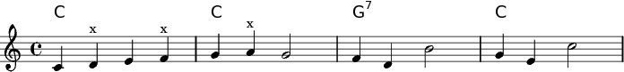
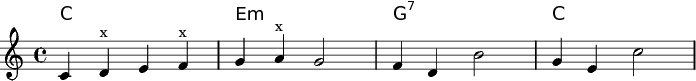

Automatic Melody Harmonisation
back
The Constraint Satisfaction Problem
This example creates a harmonisation for a given melody (e.g. a folk tune). Voicing is irrelevant in this CSP: only the chord symbols are searched for. For simplicity, this CSP defines relatively rigid basic conditions.
- Only the major, the minor, and the dominant seventh chord are permitted.
- All chords must be diatonic (in C major).
- The harmonic rhythm is fixed and all chords have the same duration (e.g. a whole note) — but chord repetitions are permitted.
- All melody note pitches must be chord pitches (i.e. each note's pitch class is an element of the set of pitch classes of its correspondent — namely simultaneous — chord). Exceptions are only allowed for notes which meet specific conditions. Supported exceptions are passing notes and auxiliary notes.
The CSP borrows a few harmonic rules from Schoenberg (1911) in order to ensure musically reasonable solutions.
- The chord progression starts and ends with the same chord. This rule ensures that the model finds the tonic by itself (consequently, the melody must start and end with the tonic).
- A seventh chord must be resolved by a `fourth upwards the fundament' (e.g. V7 -> I). Schoenberg introduces this progression as the simplest resolution form for seventh chords.
- All neighbouring chords share at least one common pitch class (this 'harmonic band' is an early form of Schoenberg's directions for producing favourable chord progressions1).
Shown are all solutions for the first phrase of the German folksong `Horch was kommt von draussen rein': only four harmonisations fulfil the rules of the CSP. For example, the second bar can not be harmonised with Am, because Am has no common pitch class with G7.
An x on top of a note denotes a non-harmonic pitch.
Solution 1

Solution 2

Solution 3

Solution 4

source
Discussion
The example is kept simple for brevity. For example, only an early
model of Schoenberg1 and only a few non-harmonic note cases
are implemented. Therefore, this CSP works well for some melodies
and less good for others. These are the primary limitations cause
by the simplification.
- The melody must only use the diatonic pitches of C-major (i.e. the
melody must not modulate). This can be addressed by defining a
relation between Strasheela's chord and scale objects.
- The harmonic rhythm of the melody must fit the harmonic rhythm
specified for the CSP (the harmonic rhythm of the melody can be
slower as chord repetitions are permitted). This is easily fixed
by making the chord durations variables, but doing so makes the
search process more complex.
- The non-harmonic pitches of the melody must fit the cases
defined. For instance, this CSP does not allow for repeated non-harmonic notes nor for suspensions. Nevertheless, the source explains
how to extend the set of exceptions supported.
- The melody must start and end with the tonic.
- The resulting chord progression ignores the formal structure of
a melody. For instance, no information on phrases or cadencing is
given to the CSP, nor does the CSP attempt to retrieve such
information by analysis.
back